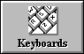
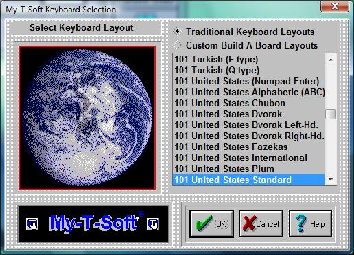
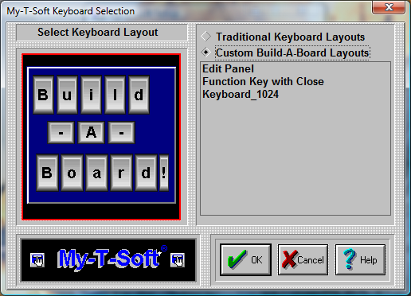

| My-T-Soft®: for Windows; Indestructible Keyboards and Indispensable Utilities; Version 1.80; User's Guide | ||
|---|---|---|
| Prev | Chapter 5. My-T-Soft Setup | Next |

Click on the Keyboards Button.

My-T-Soft can operate with many different keyboard layouts. By selecting the same keyboard layout that Windows uses, you can synchronize the display on My-T-Soft with the characters generated in your application.
The main US keyboard layout is called the 101 United States Standard (sometimes called the QWERTY layout (for the top left row of keys)). To change to a different US Keyboard layout, do the following:
On the right-hand side of the dialog, Select a layout by clicking on its name.
Press the OK Button. (If you do not want to change the current layout, press the CANCEL button).
Some Special US Layouts
Dvorak Standard
Dvorak Left Handed
Dvorak Right Handed
My-T-Easy - alphabetically ordered (ABC) keyboard layout
Note: The special US layouts will only operate correctly with the US Standard layout selected in Windows.
In order to change the My-T-Soft keyboard layout to another language, do the following steps:
Select a language (layout) by clicking on its name.
Press the OK Button. (If you do not want to change the selected language, press the CANCEL button).
Important: This process will only change the My-T-Soft keyboard layout. If you wish to change your physical keyboard layout, you must change your Windows driver from the Windows Control Panel (available in Keyboard Properties, Layout).
For proper font display & typing, you may need to set Regional Settings (available in Regional Settings).
For additional notes, see Keyboard Layouts & Windows and see Advanced Notes on Keyboard Layouts.
When an International keyboard is selected, My-T-Soft offers the option to run the Windows Control Panel. On some International layouts, the right [Alt] key becomes a combination [Ctrl][Alt] keystroke, and may be labeled [AltGr].
Important: Many non-US layouts incorporate an additional key not available on the 101 layouts. In almost all cases, the recommended and supported layout is the 104 layout for any non-US selection. In some cases, only the 104 layout has been updated.
Additional Keyboard Notes:
Note: Some layouts date back to Windows 3.1/Windows 95. These layouts are labeled "(old)". For later releases of Windows, these layouts may not match changes to the current keyboard layouts in Windows. Some layouts may only operate correctly under Windows 95/98 - refer to the layouts available in your version of Windows to select which layout to use in My-T-Soft.
The old layouts are included as a reference & reminder that keyboard layouts are not as consistent as one might believe. Because manufacturers have flexibility in keyboard layouts (e.g. look at different laptop keyboards), constant changes to the underlying operating system, and there are no specific international standards that can be used as a reference, a keyboard layout can only be viewed as snapshot in time. And for all we know, these "old" layouts may one day be useful again. Refer to Developer Kit utilities for further information on Keyboard layouts, and refer to IMG's Build-A-Board for full keyboard layout customization capabilities.
Asian layouts require fonts for the East Asian languages - on some versions of Windows, these are not installed automatically - refer to Regional and Language options in Control Panel for adding these supplemental files. Note that the Asian languages may not be supported at all in certain versions of Windows!
Some layouts are designed for operation in the localized versions of Windows. Arabic, Greek, Hebrew, Russian, & Central / Eastern European layouts may not correctly display all characters if a different ANSI code page is in use.
Typical users operate with only 1 keyboard layout, but it is possible to switch between active layouts for various applications in Windows. To automatically have My-T-Soft synchronize with changes to the active layout in Windows, refer to the KeyboardSync utility in the Developer's Kit.
Select Custom Build-A-Board Layouts

There are a few sample, custom Build-A-Board Layouts available. Additional Build-A-Board layouts can be created, and when placed in the Installation Folder will be added to this list. When selected, the KEYBOARD.KBF in the users configuration folder is replaced with the selected layout. When My-T-Soft is run, the layout is recognized, and the Build-A-Board compatible run-time (MYTSOFT2.EXE) is used to operate with the version 2.x keyboard layouts.
Using Build-A-Board Layouts: Custom Build-A-Board layouts are displayed by MYTSOFT2.EXE (which is a completely different executable program), and as such, the configuration options documented for My-T-Soft are not referenced or used by the Build-A-Board based executable. All configuration options available for Build-A-Board layouts are controlled via Build-A-Board, and contained within the 2.x version layout file (KeyBoard File (KBF File)). The support for Build-A-Board custom layouts is available as part of the license to My-T-Soft to add even more flexibility and utility to the My-T-Soft product. However, a separate license for Build-A-Board is required to obtain all the capabilities of Build-A-Board. For continuity and name recognition, the trademarked name My-T-Soft is used for both the newer Build-A-Board layouts (2.xx version) and original software (1.xx version), along with the fully encompassing My-T-Soft Family.